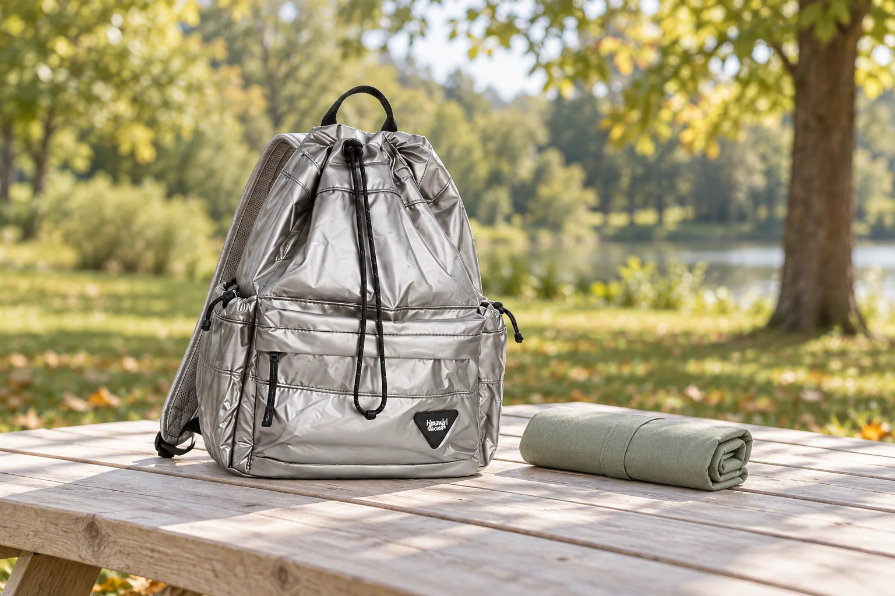

돗자리를 챙기는 날은 돌아올 상태부터 생각하기

공원에 갈 때 돗자리는 집에서 접어둔 상태입니다. 돌아오는 때에는 밑면의 흙이나 물기 때문에 같은 자리로 바로 넣기 어려울 수 있습니다. 이 차이를 생각하면 준비할 것은 앉을 물건과 먹을 것만이 아닙니다. 사용한 돗자리를 어떻게 접고 다른 짐과 나누어 가져올지 정하면 귀가 뒤 정리의 순서도 생깁니다.
우선 사용할 장소에서 돗자리를 펼쳐도 되는지 현장의 안내를 확인합니다. 오래 머물 계획인지 잠깐 쉬는 일정인지에 따라 다른 짐도 달라집니다. 공원에 갈 때 늘 가져가던 목록을 모두 담기보다 이번에 사용할 물건을 고릅니다. 돗자리가 돌아갈 공간을 새 물건으로 채워버리지 않도록 처음부터 하나의 묶음으로 생각해봅니다.
접힌 돗자리와 보관 주머니
가방과 비교할 모습은 펼친 크기가 아니라 평소 접어 사용하는 상태입니다. 보관 주머니가 있다면 씌운 뒤의 모양을 봅니다. 손잡이나 돌출된 부분이 있으면 그것도 이동할 때 필요한 자리에 들어갑니다. 집에서 가방에 넣고 꺼내보며 입구와 다른 짐에 걸리는지 확인하세요. 접는 방법이 안내되어 있으면 그 방법을 따릅니다.
가방에 넣으려고 돗자리를 더 세게 접거나 누르기 전에 별도 운반이 가능한지 생각합니다. 제품에 안내되지 않은 고정 부위를 만들어 밖에 매다는 방식으로 준비하지 않습니다. 실제로 들고 갈 묶음이 몇 개인지 알고 손에 무엇이 남는지 확인합니다. 음식이나 개인 기기를 함께 가져가면 각각의 보관 방법도 따로 정해야 합니다.
이 글에 소개하는 Himawari No.0514 제품 정보는 공원 외출의 가방을 살펴볼 자료입니다. 사용할 돗자리와 보관 주머니를 정한 뒤 그 묶음을 담을지 별도로 들지 선택하세요. 가방 안의 빈 공간보다 돌아오는 상태가 선택을 바꿀 수 있습니다. 돗자리를 빼고 난 자리를 다른 소지품으로 채울 계획이라면 되담을 공간이 남는지도 함께 봅니다.
펼친 자리에서 기억할 두 면
도착하면 허용된 곳 안에서 바닥 상태를 살펴봅니다. 눈에 보이는 물기나 뾰족한 물건이 있는 자리는 피하고 현장의 안내에 맞춰 둡니다. 어느 면이 땅에 닿았는지 알아두면 떠날 때 현재 상태를 확인하기 쉽습니다. 처음부터 모든 오염을 피할 수 있다고 생각하기보다 사용한 면을 구분해 정리하는 준비입니다.
백팩도 어느 자리에 놓았는지 정합니다. 음식이나 음료를 두는 곳과 나누어 놓고 가방 끈이 밖으로 늘어져 이동하는 사람에게 걸리지 않는지 봅니다. 돗자리 위에서 물건을 여러 곳에 펼쳤다면 떠날 때 회수할 위치가 늘어납니다. 자주 쓸 것만 꺼내고 나머지는 정한 묶음에 남겨두는 방식으로 시작할 수 있습니다.
귀가 준비를 할 때는 돗자리를 접기 전에 그 위의 개인 물건을 모읍니다. 작게 접힌 티슈나 열쇠 같은 소품이 함께 말려 들어가지 않았는지 눈으로 확인합니다. 내 물건을 먼저 가방의 정해둔 위치로 돌려놓고 돗자리의 밑면 상태를 봅니다. 주변에 흙이나 먼지가 날리지 않도록 해당 제품의 정리 안내에 맞춰 진행합니다.
접는 방향은 제품의 방식과 현재 상태를 함께 생각합니다. 깨끗한 면과 흙이 묻은 면을 구분해볼 수 있지만 정해진 구조가 있다면 안내를 따릅니다. 가방 안감이나 입고 있는 옷을 돗자리의 닦는 면으로 쓰지 않습니다. 현장에서 필요한 정리와 집에서 할 관리는 다르므로 지금 처리할 수 없는 부분은 어떻게 분리해 운반할지 정합니다.
되담기와 귀가 후 정리를 연결하기
사용한 돗자리를 담을 임시 주머니를 준비했다면 그 상태도 봅니다. 다른 소지품과 직접 맞닿지 않게 위치를 정하고, 주머니를 썼다는 이유로 모든 물기가 차단된다고 생각하지 않습니다. 돗자리의 상태나 접힌 부피가 출발 때와 달라졌다면 별도로 운반할 수 있습니다. 처음의 배치를 복원하려고 물건을 억지로 압축할 필요는 없습니다.
주머니를 닫기 전에 함께 담긴 개인 물건이 없는지 확인합니다. 돗자리 모서리에 놓았던 소품이나 포장이 남아 있을 수 있습니다. 정리한 자리는 현장의 처리 안내에 맞춰 마무리하고, 자신의 짐을 다 챙겼는지 확인합니다. 분리한 돗자리와 백팩을 같이 놓고 다음 이동에서 무엇을 들고 갈지 정해보세요.
집에 들어오면 임시 묶음부터 꺼냅니다. 돗자리와 주머니는 각각의 관리 안내에 맞춰 정리합니다. 밖에서 주머니로 나누어 가져왔다는 사실은 다음 외출까지 안에 두어도 된다는 뜻이 아닙니다. 가방 안에도 눈에 보이는 흙이나 물기가 옮겨갔는지 살펴보고 제품 안내대로 필요한 정리를 합니다.
정리 뒤에는 보관할 수 있는 상태인지 확인하고 원래 자리로 돌려놓습니다. 다음 외출용 짐은 아직 정해지지 않았어도 돗자리의 묶음과 다른 소품을 구분해둘 수 있습니다. 주머니를 함께 쓰는 경우에는 어떤 용도로 사용했는지도 알아볼 수 있게 정합니다. 깨끗한 짐을 넣는 용도와 사용한 물건의 임시 운반을 무심코 바꾸어 쓰지 않습니다.
다음 공원 외출에 참고할 내용은 사용 후 가장 정리하기 어려웠던 부분입니다. 돗자리를 접을 자리가 좁았는지, 되담을 공간이 없었는지, 가져간 소품을 찾기 어려웠는지 남겨봅니다. 그 기록을 바탕으로 가져갈 총량이나 운반 방법을 바꿀 수 있습니다. 출발 전에 되담을 묶음을 비워두고, 귀가하면 그 묶음부터 꺼내는 흐름을 이어갑니다.